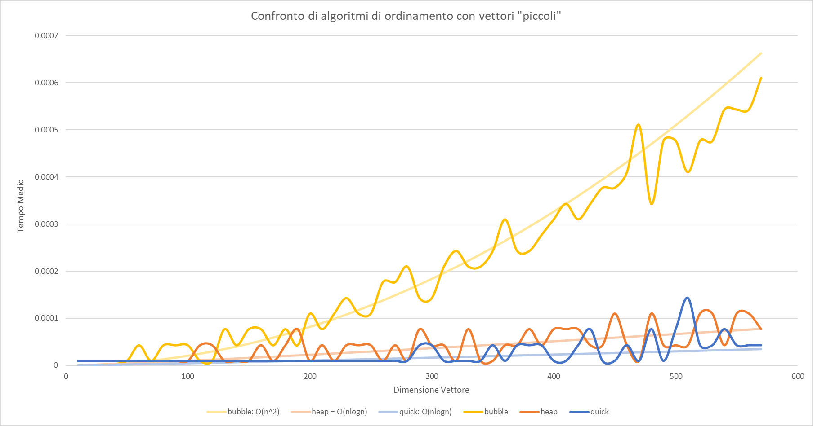
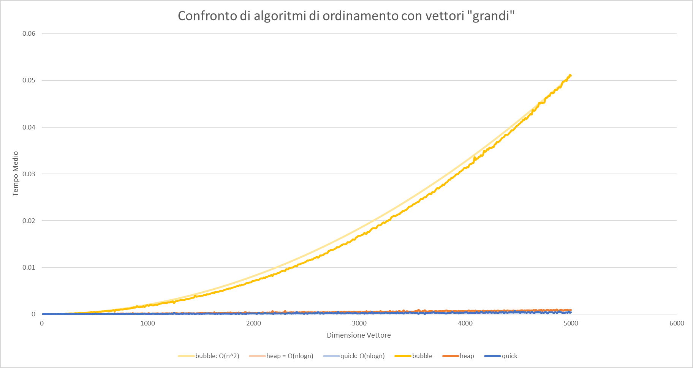
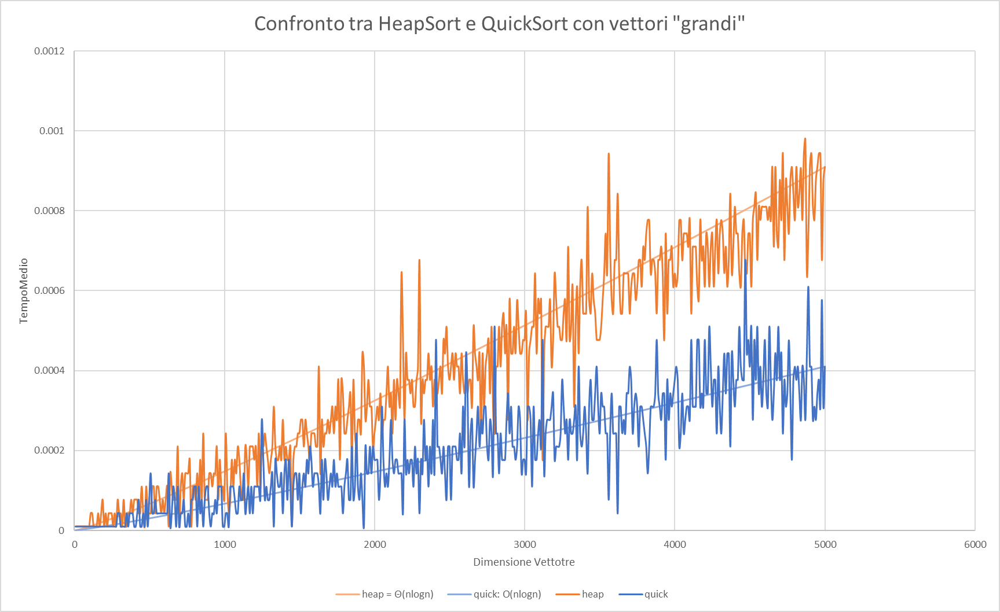

Il programma benchmark permette di effettuare un test di valutazione delle performance effettive degli algoritmi di ordinamento bubble_sort, heap_sort e quick_sort.
Uso: ./benchmark.exe
n_runsmax_dimstepfilename
L'applicativo procede con un for da i = 0 a max_dim con un passo di step; per ogni algoritmo di ordinamento genera n_runs array di interi di dimensione i li ordina e salva la media di ogni algoritmo con formato csv sul file filename.
Al fine di migliorare la "bontà" dei dati si è optato per generare da input dell utente il test di banchmark. tramite un'apposita funzione dinamica. L'implementazione degli algoritmi si basa sui lucidi.
void banchmark(int runs, int max, int step, char* filename, void (*func_ptr[])(int *, int), int n)
{
FILE *fp = fopen(filename, "wt");
fprintf(fp, "dim,suns,");
for (int i = 0; i < n-1; i++)
fprintf(fp, "%d,", i);
fprintf(fp, "%d\n", n-1);
for (int i = 0; i <= max; i+=step)
{
double times[n];
for(int p = 0; p<n; p++)
times[p] = 0;
for (int j = 0; j < runs; j++)
{
int *test_a = random_array(i);
for (int k = 0; k < n; k++)
{
struct timeval start, end;
int *to_test = copy_array(test_a, i);
gettimeofday(&start, NULL);
func_ptr[k](to_test, i);
gettimeofday(&end, NULL);
assert(check_sort(to_test, i)); //Controlla che effettivamente l'array sia ordinato
times[k] += (end.tv_sec + end.tv_usec*1e-6) - (start.tv_sec + start.tv_usec*1e-6) + 0.00001;
free(to_test);
}
}
fprintf(fp, "%d,%d,",i, runs);
for (int p = 0; p < n-1; p++)
fprintf(fp, "%lf,", (times[p]/runs));
fprintf(fp, "%lf\n", (times[n-1]/runs));
}
fclose(fp);
}
int main(int argc, char* argv[])
{
/*...*/
void (*func_ptr[3])(int *, int) = {bubblesort, heapsort, start_qsort};
banchmark(/*...*/, func_ptr, 3);
}



Direi di si, dato che: come si può vedere in fig 1.1 e fig.1.3 i valori effettivi bubble, heap e quick sono molto prossimi ai loro asintotici
Il
quickSortè l'algoritmo generalmente più veloce
Nei casi in cui si vuole "garantire"
bisognerebbe optare sull'
heapsort; mentre se non c'è una necessità effettiva di questa garanzia ilquicksortè il più consigliabile.
Come si può ben evidenziare dalla fig. 1.3 i due algoritmi hanno lo stesso comportamento in termini di asintotico, il
quicksortè più veloce a causa del minor numero di istruzioni macchina per ciclo. Invece dal punto di vista della stabilità: più l'array diventa grande più l'heapsortsi stabilizza, viceversa ilquicksort.
In generale sceglierei sempre il
quicksortdato che è sperimentalmente dimostrabile che sia generalmente più veloce. E si, è lo stesso che avrei scelto prima del test per lo stesso motico indicato sopra: preferisco andare il 60% delle volte più veloce rispetto che avere la garanzia di non superare una determinata soglia, dato che non ve ne sono.